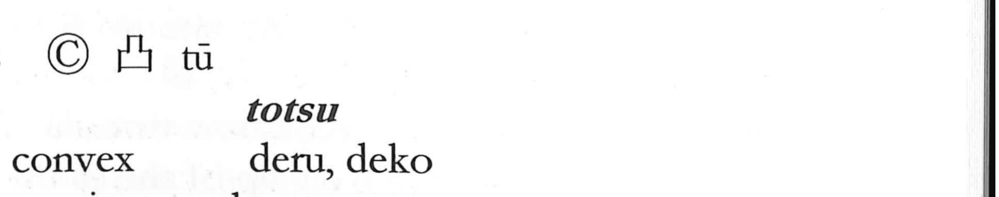

凸

Kun: deru, deko | On: totsu
convex ・ protrusion ・ to protrude
Explanation
A straightforward pictograph, 凸 draws a surface whose center rises in a gentle swell. It pairs with 凹, where the center sinks, and together they neatly express unevenness as 凸凹 (dekoboko). Both began as simple mark-like signs. Shirakawa also recalls a charming anecdote: the long horizontal plaque at Ichijo-ji (Ekayana, the One Vehicle Temple) in Nanjing, established by Emperor Wu of the Liang (5th–6th century), appeared alternately raised and sunken when viewed from afar, so people nicknamed it 凹凸寺, the “Unevenness Temple.” The enduring image of a central bulge is the heart of 凸.